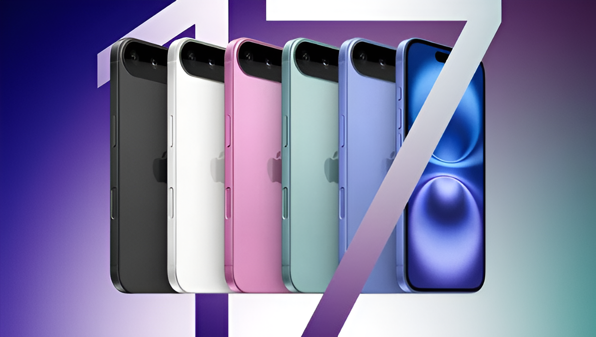
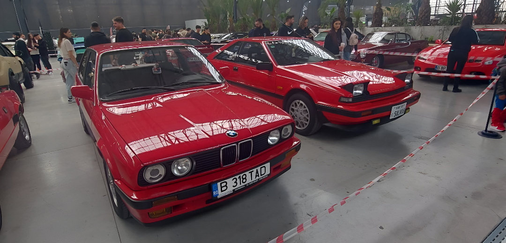
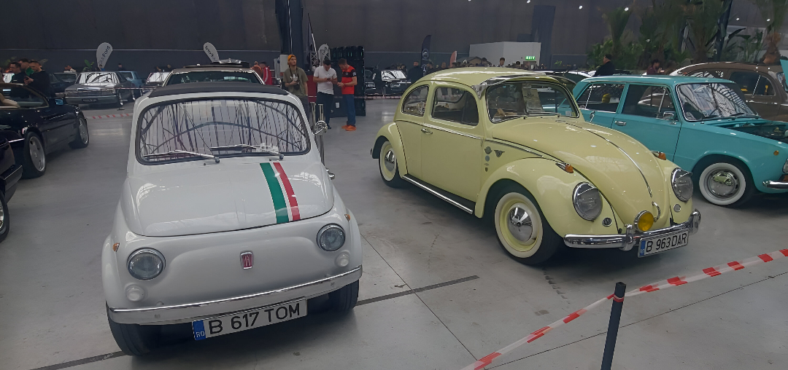
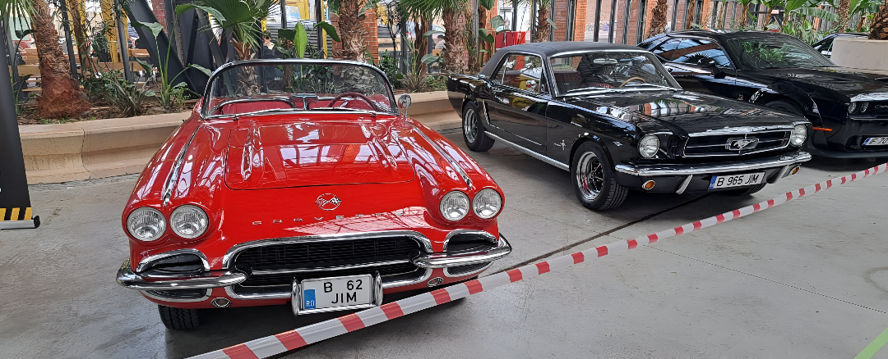

iPhone 17 Launch: What to Expect
Published on Nov 12, 2025

The iPhone 17 is one of the most anticipated smartphone releases of the year, and Apple is already generating excitement with hints of major upgrades. Early reports suggest a significant leap forward in performance, design, and AI capabilities.
At the heart of the device is expected to be a new A-series chip, offering faster processing speeds, improved efficiency, and better support for advanced machine-learning tasks. This would enable smoother multitasking, faster app performance, and more complex on-device AI features.
According to several leaks, the iPhone 17 may also introduce a noticeably thinner design while maintaining structural integrity. Alongside this, battery improvements are rumored to extend usage time without increasing the device’s weight.
Camera enhancements are also at the top of the list, with sources claiming better low-light performance, a more powerful zoom system, and upgraded sensors designed to capture more detail with reduced noise. Apple may also introduce new computational photography tools powered by on-device AI.
Additionally, the iPhone 17 is expected to refine the Dynamic Island, offer an upgraded display with improved brightness and efficiency, and potentially introduce new satellite communication features.
While Apple has not confirmed all the details, the iPhone 17 appears poised to redefine the high-end smartphone experience once again. As the official announcement approaches, more leaks and previews are expected to surface.
About Me
My name's Tony and I'm a student at the Faculty of Mathematics and Computer Science, University of Bucharest.
Some photos (made by me)



Follow Me
Stay connected for more updates and articles!